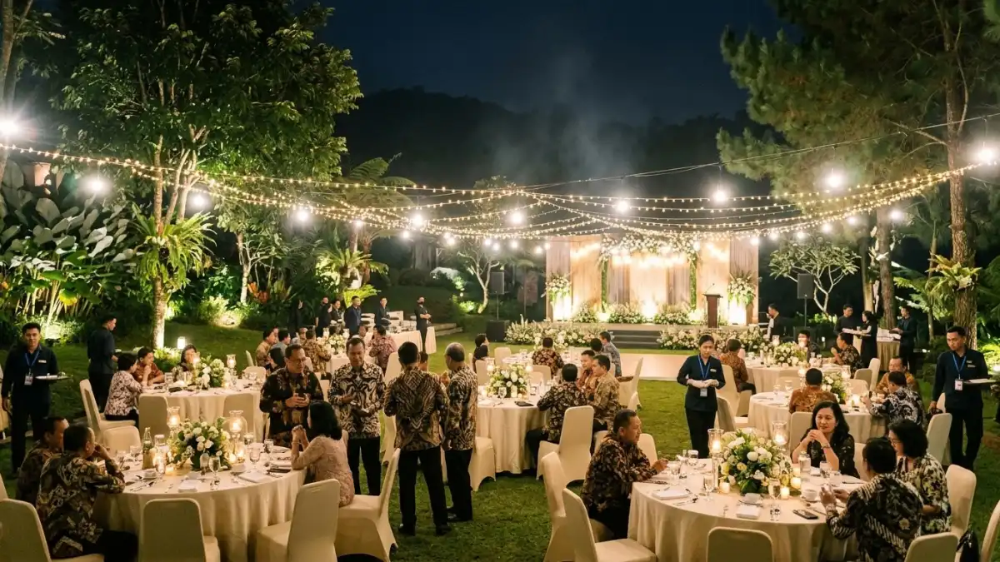

Susunan rundown yang ideal adalah kunci suksesnya rangkaian gala
dinner yang meninggalkan kesan bagi peserta. (Ilustrasi)
Susunan rundown yang ideal adalah kunci suksesnya rangkaian gala
dinner yang meninggalkan kesan bagi peserta. (Ilustrasi)
Rundown gala dinner outdoor Batu yang baik berurutan dari registrasi, pembukaan, makan malam, hiburan, hingga penutupan, dengan durasi ringkas dan rencana cadangan hujan.
- Rundown gala dinner outdoor Batu ideal berdurasi sekitar tiga sampai empat jam dengan jeda cukup antar sesi.
- Urutan umum meliputi registrasi, pembukaan, sambutan, makan malam, hiburan, penghargaan, dan penutupan.
- Konsep dan tema harus selaras dengan karakter acara, anggaran, dan suasana pegunungan Batu.
- Udara dingin menuntut penyesuaian menu, busana, dan durasi sesi di ruang terbuka.
- Rencana cadangan hujan wajib tertulis di dalam rundown.
DAFTAR ISI
- 1. Bagaimana Susunan Rundown Gala Dinner Outdoor yang Ideal?
- 2. Konsep dan Tema Apa yang Cocok untuk Gala Dinner Outdoor di Batu?
- 3. Hiburan Apa yang Cocok dan Bagaimana Mengaturnya?
- 4. Bagaimana Menyesuaikan Rundown dengan Udara Dingin Batu?
- 5. Apa Rencana Cadangan Jika Hujan Turun?
- 6. Bagaimana Menyiapkan Rundown yang Siap Dijalankan Tim Lapangan?
- 7. Kesimpulan
1. Bagaimana Susunan Rundown Gala Dinner Outdoor yang Ideal?
Susunan rundown gala dinner outdoor yang ideal dimulai dari registrasi tamu, pembukaan, sambutan, makan malam, hiburan, penghargaan bila ada, lalu penutupan dan sesi foto bersama.
Berikut contoh ilustratif untuk acara berdurasi sekitar tiga setengah jam. Durasi dapat disesuaikan dengan kebutuhan dan jumlah peserta.
| Waktu (ilustratif) | Sesi | Keterangan |
|---|---|---|
| 18.00 - 18.30 | Registrasi dan welcome drink | Tamu tiba, menerima minuman hangat, dan berfoto |
| 18.30 - 18.45 | Pembukaan | Master of ceremony membuka acara dan memandu tamu duduk |
| 18.45 - 19.00 | Sambutan | Sambutan singkat pimpinan atau panitia |
| 19.00 - 20.00 | Makan malam dan hiburan ringan | Hidangan disajikan sambil musik live |
| 20.00 - 20.45 | Hiburan utama atau penghargaan | Penampilan utama, kuis, atau pemberian penghargaan |
| 20.45 - 21.15 | Sesi interaktif | Permainan ringan atau sesi ramah tamah |
| 21.15 - 21.30 | Penutupan dan foto bersama | Ucapan terima kasih dan dokumentasi |
Poin penting dari susunan ini adalah porsi makan malam yang cukup panjang karena pada acara gala, momen bersantap sekaligus berbincang adalah inti pengalaman.
Sambutan sebaiknya singkat agar tamu tidak kedinginan menunggu. Untuk gambaran menyeluruh, lihat paket gala dinner outdoor Batu.

Konsep garden elegan dengan pencahayaan hangat sangat sesuai dengan nuansa pegunungan Batu di malam hari. (Ilustrasi)2. Konsep dan Tema Apa yang Cocok untuk Gala Dinner Outdoor di Batu?
Konsep yang cocok untuk gala dinner outdoor di Batu adalah tema yang menonjolkan suasana alam, seperti garden elegan, rustic, atau tradisional Nusantara, dengan pencahayaan hangat dan palet warna natural.
Pemilihan tema sebaiknya mengikuti tujuan acara dan karakter peserta. Berikut beberapa pilihan yang sesuai dengan suasana Batu.
- Garden elegan. Memadukan rangkaian bunga, lampu gantung, dan meja bundar bertaplak putih. Cocok untuk acara perusahaan formal.
- Rustic. Menggunakan elemen kayu, kain goni, lilin, dan tanaman. Memberi kesan hangat dan akrab, ideal untuk family gathering.
- Tradisional Nusantara. Mengangkat busana, musik, dan dekorasi daerah. Sesuai untuk acara bertema budaya atau pertemuan nasional.
- Modern minimalis. Mengutamakan garis-garis yang bersih, palet warna yang netral, serta pencahayaan yang terstruktur dengan baik. Cocok untuk peluncuran produk atau acara eksekutif.
- Starlight atau lampu string. Menonjolkan langit malam dan lampu hias. Efektif karena udara Batu yang sejuk mendukung suasana romantis dan tenang.
Apa pun tema yang dipilih, pastikan elemen dekorasi tahan angin, stabil, dan aman dari kobaran api bila menggunakan lilin atau api terbuka. Biaya dekorasi mengikuti kerumitan konsep, sebagaimana dibahas pada harga paket gala dinner outdoor Batu.
3. Hiburan Apa yang Cocok dan Bagaimana Mengaturnya?
Hiburan yang cocok untuk gala dinner outdoor adalah musik live bernuansa santai, penampilan budaya, dan permainan ringan yang tidak mengganggu suasana makan malam, dengan durasi yang diatur rapi.
Hiburan berfungsi menjaga suasana, bukan menenggelamkan percakapan. Karena area terbuka cenderung membuat suara menyebar, atur volume dan tata letak speaker agar nyaman di setiap meja.
Beberapa pilihan hiburan yang umum:
- Live music akustik atau band. Sesuai untuk sesi makan malam dengan lagu santai, lalu meningkat menjelang sesi utama.
- Penampilan tari atau musik tradisional. Memberi nuansa budaya dan cocok untuk tamu dari luar daerah atau mancanegara.
- Kuis dan doorprize. Menjaga keterlibatan tamu tanpa banyak peralatan.
- Permainan kelompok ringan. Cocok pada sesi interaktif, selama tidak menyulitkan tamu berbusana formal.
- Pertunjukan visual. Misalnya video apresiasi atau slideshow dokumentasi kegiatan.
Beberapa prinsip pengaturan hiburan: jaga durasi tiap penampilan tetap ringkas, siapkan jeda antar sesi, dan hindari penampilan keras saat tamu sedang bersantap. Pastikan juga pengisi acara memiliki ruang persiapan yang terlindung dari angin dan dingin.
4. Bagaimana Menyesuaikan Rundown dengan Udara Dingin Batu?
Menyesuaikan rundown dengan udara dingin Batu dilakukan dengan memperpendek sesi berdiri, menyajikan menu hangat, menyediakan penghangat, dan memberi imbauan busana yang sesuai kepada tamu.
Suhu malam hari di dataran tinggi umumnya dingin, sehingga kenyamanan tamu perlu diprioritaskan agar acara tidak terasa melelahkan. Beberapa penyesuaian yang efektif:
- Majukan sesi makan. Sajikan hidangan hangat lebih awal agar tamu cepat merasa nyaman.
- Sediakan minuman hangat. Teh, kopi, dan wedang menjadi pilihan yang hampir selalu diminati.
- Gunakan penghangat area. Perangkat pemanas yang dapat dipindahkan atau api unggun yang ditempatkan pada lokasi yang aman dapat memberikan manfaat signifikan.
- Sediakan selimut atau pashmina. Berguna terutama bagi tamu perempuan dan lanjut usia.
- Beri imbauan dress code. Informasikan suhu malam melalui undangan agar tamu membawa jaket atau pelapis.
- Singkatkan sambutan. Sesi berdiri lama sebaiknya dibatasi.
- Atur posisi meja. Hindari area yang terpapar angin langsung.
Informasi prakiraan cuaca dapat dicek di BMKG beberapa hari sebelum dan pada hari acara sebagai dasar penyesuaian terakhir.
5. Apa Rencana Cadangan Jika Hujan Turun?
Rencana cadangan hujan untuk gala dinner outdoor mencakup tenda atau area beratap, lokasi pengganti, pembagian tugas yang jelas, dan batas waktu keputusan pemindahan acara.
Hujan di dataran tinggi dapat datang tiba-tiba, sehingga rencana cadangan harus siap sebelum acara dimulai. Pastikan elemen-elemen berikut tercantum tertulis di rundown.
- Titik pengambilan keputusan. Tentukan siapa yang berwenang memutuskan pemindahan dan kapan batas waktunya.
- Area pengganti. Siapkan ruang tertutup atau tenda besar yang dapat menampung seluruh tamu.
- Perlindungan perangkat. Lindungi tata suara, panggung, dan peralatan listrik dari air.
- Jalur tamu aman. Pastikan jalur licin ditutup atau diberi alas dan lampu.
- Pembagian tugas tim. Tentukan tim yang memindahkan meja, kursi, dan dekorasi.
- Komunikasi kepada tamu. Siapkan petugas yang mengarahkan tamu dengan tenang.
- Penyesuaian rundown. Siapkan versi ringkas bila waktu tersita oleh perpindahan.
Latihan persiapan sebelum pelaksanaan acara, mencakup simulasi proses perpindahan, memfasilitasi tim untuk beroperasi dengan efisiensi tinggi.
Penentuan lokasi venue yang dilengkapi dengan ruang cadangan yang cukup luas turut meminimalkan potensi risiko, sebagaimana teruraikan dalam petunjuk teknis pemilihan lokasi acara gala dinner di luar ruangan di Batu.
6. Bagaimana Menyiapkan Rundown yang Siap Dijalankan Tim Lapangan?
Rundown yang siap dijalankan tim lapangan ditulis dengan waktu jelas, penanggung jawab per sesi, kebutuhan perlengkapan, dan versi cadangan, lalu dibagikan serta digladi sebelum acara.
Rundown yang baik bukan sekadar jadwal, melainkan alat kerja. Tuliskan untuk setiap sesi: waktu mulai dan selesai, penanggung jawab, perlengkapan yang diperlukan, dan sinyal peralihan ke sesi berikutnya. Bagikan dokumen kepada seluruh pihak, termasuk master of ceremony, tim katering, tim teknis, dan pengisi acara.
Lakukan gladi di lokasi pada waktu yang mendekati jam acara untuk menguji suara, pencahayaan, dan alur tamu. Tunjuk satu koordinator lapangan sebagai pusat komunikasi agar instruksi tidak bertabrakan.
Terakhir, siapkan tim dokumentasi yang memahami momen penting seperti sambutan, pemberian penghargaan, dan foto bersama, sehingga hasilnya dapat dipakai untuk laporan dan publikasi internal.
7. Kesimpulan
Rundown gala dinner outdoor Batu yang efektif berdurasi ringkas, berurutan jelas, dan memberi porsi cukup bagi sesi makan malam.
Pilih konsep yang selaras dengan suasana pegunungan, atur hiburan agar tidak mengganggu percakapan, dan sesuaikan acara dengan udara dingin.
Tulis rencana cadangan hujan, lakukan gladi, dan tunjuk koordinator lapangan. Untuk panduan menyeluruh, lihat paket gala dinner outdoor Batu.